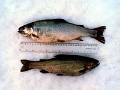
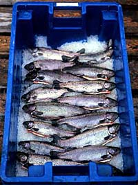
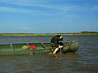

Who makes the rules?Commercial fishing and fish marketing are regulated under several sets of federal and provincial acts and regulations. 1. Fisheries Act (Canada) - governs the conservation of fish and fish habitat for inland fisheries as well as ocean fisheries within Canadian territorial waters. 2. Saskatchewan Fishery Regulations, 1995 - federal regulations passed pursuant to the Federal Act. These regulations allow for the closure of particular waters or parts of waters to all fishing, for conservation purposes. They also regulate fishing activities pursuant to aboriginal or Treaty rights, since such fish harvesting may only be regulated by federal legislation, then subject to specific guidelines. 3. The Fisheries Act Saskatchewan, 1994 and The Fisheries Regulations which are pursuant to that Act, govern most fish harvesting and marketing activities taking place within Saskatchewan. 4. The Freshwater Fish Marketing Act is a Federal Act passed in 1969, which created the Freshwater Fish Marketing Corporation establishes the administration of the FFMC. 5. The Fish Inspection Act and Regulations are federal legislation governing processing plants and product quality for fish and fish products which are exported from a province to another province or country.
|
How many fish can be taken during the commercial season? (What is a quota?)Commercial fishing quotas are calculated based on the productivity available from each lake, divided into allocations to all users. Allocation priorities are assigned to: 1. conservation, 2. Treaty fishing, 3. subsistence fishing, 4. sport fishing, 5. and commercial use by outfitters and commercial fishermen (by the department of Environment and Resource Management).
|
Quotas are in three forms:
- 1. Lake Limits: These are set as a total number of kilograms of fish which may be harvested by the commercial fishery on the lake, all species combined. Until 1949, all commercial fishing lakes in the province were managed by lake limits. Today, very few lake limits are used.
Advantages to lake limits are that the fishermen can harvest the entire limit and that, if fishing is relatively random, the catch will reflect the abundance of the different species in the lake.
A disadvantage to lake limits is that fishermen target one high priced species and avoid or discard others to maximize their incomes. The result is over harvesting and population depletion.
- 2.Tolerance : These are set as a percentage of the total catch which may be made up of gamefish, usually whitefish. Tolerances vary from 0 - 25%.
Tolerances are set on a daily basis. If the tolerance is exceeded, the fishery is closed.
Tolerance limits began to be applied in about 1950, in response to increased sport fishing activity and tourist outfitting development in the province. Today, about 30 lakes have tolerance limits. Most have been replaced by species limits.
- 3.Species Limits: Species limits refer to separate quotas on each species harvested from a lake.
Most lakes are managed with separate species quotas. There is some flexibility in the application of species limits, allowing a higher proportion of the other species.
The advantages of species limits include:
- - prevention of highgrading
- - the ability to allow a commercial fishery in a lake with a high angling pressure by allocating non-gamefish species (like whitefish, tullibee and mullet) to commercial fishery
- - the ability to tailor the quotas to each species to the individual lake characteristics
The disadvantages to species limits are:
- - When any one species limit on a lake is taken, the fishery is closed. This often leaves a substantial portion of the allowable yield unharvested.
- - Fish populations fluctuate considerable. As mentioned, a random fishery will harvest different species according to their relative abundance. The quota setting system is not responsive enough to adjust species limits according to changes in population strength.
|

In addition to these quotas, variations can and do occur. For example, in a smaller lake which can support only small harvests, pulse quotas may be set. Twice the usual quotas may be taken if the lake is fished only every second year. Pulse quotas are often lake limits rather than species limits.
Quota levels are reviewed regularly or on request. Most lakes where reduction occurred are now fully or over allocated to various users. Increasing commercial allocation is almost impossible. Overall, most accessible lakes in Saskatchewan are fully allocated to the users listed. There is no excess production available to increase commercial fishing quotas. However, not all quotas are fully harvested. Maximizing harvest lies with the fisherman themselves. It is up to the fishermen to regulate harvests, usually through individual quotas on all or limiting species.
|
How many fish am I alone allowed to catch?Individual Quotas are allocated to each fisherman, usually in the form of separate species limits. Thus each fisherman manages his or her own fishing activity. One or more high priced species can be targeted, within the available species limits and the fisherman can leave other species limits is filled or the fisherman can attempt to balance the catch so as to take most of the available limits. Most fisheries involve more than one fisherman up to seventy. When species limits are in effect, these fisheries can be closed if one or a few fishermen target a particular limiting species and take the available quota. Other fishermen who are avoiding the limiting species are forced to stop even though they have been harvesting other fish. In some multi-fisherman fisheries, the local fisherman's co-op has divided the quota among its members so that each fisherman has his own share of the limiting species. Lakes with individual quotas include La Ronge, Candle Lake and Pinehouse Lake. In all cases the fisherman have established eligibility criteria, usually to the effect that no new fishermen can be licensed unless an existing fisherman leaves. There is no ownership of the quota by the fishermen, but in most cases if a fisherman quits fishing he can sell his equipment and the co-op will vote the purchaser in as a new fisherman.
|